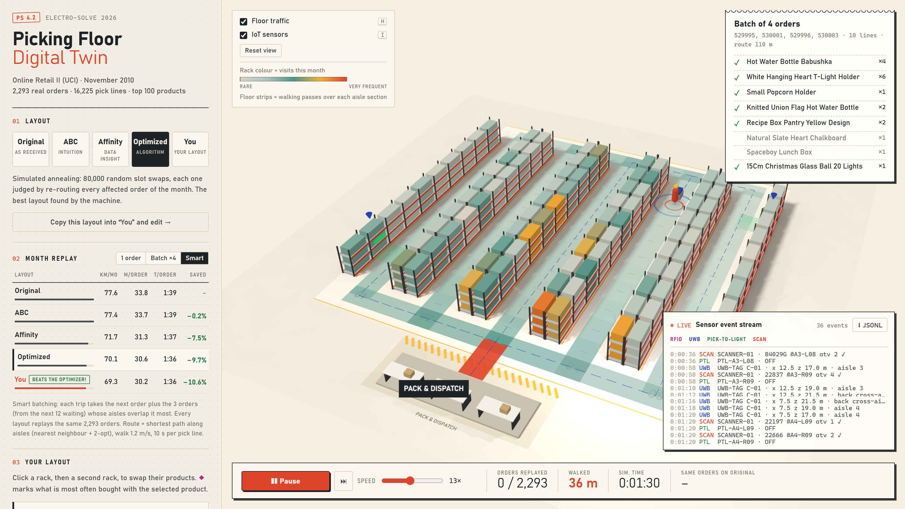
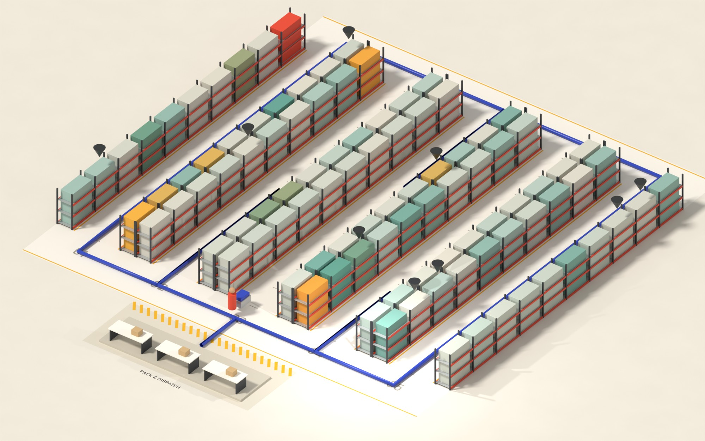
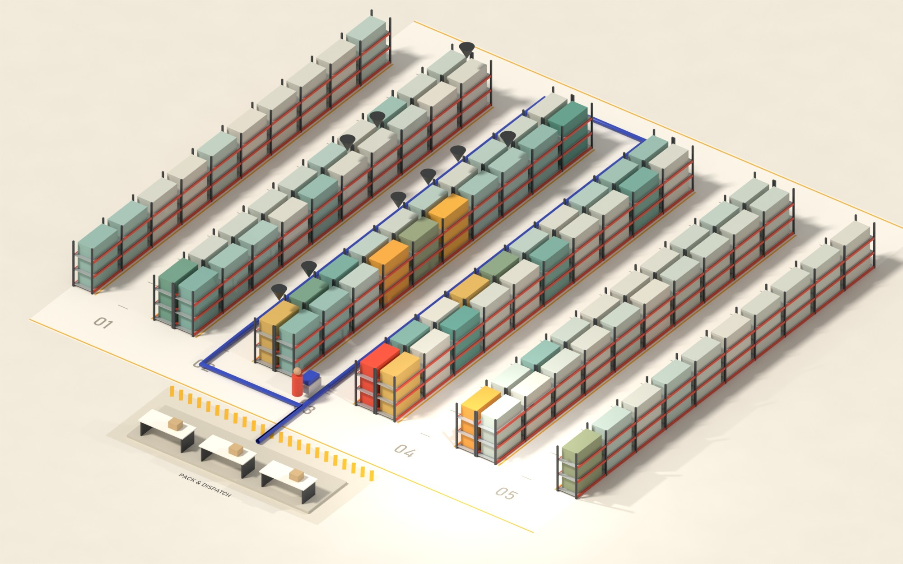

The internal guide to the code as it stands on branch RK-multiple-pickers-implemented: every layer from the raw Excel file to the 3D floor, what each file does, how the parts talk to each other, what changed in the last two commits, and what is still rough.
docs/review-prep.html was written for the first version and is still right about the data, graph, routing and layouts. This guide covers those too, but more briefly, and spends its space on the new parts. Its demo script is now out of date.One sentence: Python cleans the raw orders once; a single JavaScript simulation core turns any product-to-shelf layout into walking distance and time; that same core runs offline in Node (to build the reference layouts, the congestion study and the Blender data), in a browser Web Worker (live optimizer) and on the browser main thread (scoring, replay, game). Everything the user sees, and every number on the deck and posters, comes out of that one core, so the numbers always agree.
| Path | Layer | What it is | |
|---|---|---|---|
preprocess/preprocess.py | 0 | pandas cleaning of Online Retail II; writes the three data JSONs | SAME |
web/src/sim/warehouse.js | 1 | geometry config (CFG), walking graph, slots, all-pairs shortest paths | SAME |
web/src/sim/route.js | 2 | trips, routing, scoring, edge traffic, smart batching | CHANGED |
web/src/sim/layouts.js | 3 | Original / ABC / Affinity layouts, co-occurrence, partner hints | SAME |
web/src/sim/anneal.js | 3 | simulated annealing, moved out of optimize.mjs so the browser can use it | NEW |
web/src/sim/multi.js | 4 | several pickers sharing the floor, aisle capacity, waiting | NEW |
web/src/sim/optWorker.js | 3/6 | Web Worker wrapper that runs anneal() off the main thread | NEW |
web/scripts/optimize.mjs | 3 | offline: builds layouts.json + hold-out test; now calls anneal.js | CHANGED |
web/scripts/congestion.mjs | 4 | offline: 1–6 pickers × 4 layouts × 2 aisle widths → congestion.json | NEW |
web/src/scene/scene.js | 5 | Three.js scene: baked floor, instanced racks, picker(s), markers, lamps | CHANGED |
web/src/main.js | 6–7 | app controller: state, caches, scoreboard, game, replay, optimizer UI, team UI, IoT | CHANGED |
web/index.html, style.css | 6 | panel sections 01–05, HUD, toolbar, IoT panel; "warehouse ledger" theme | CHANGED |
web/public/tex/floor.jpg | 5/8 | top-down Blender bake of the floor (shadows, AO, markings), 159 KB | NEW |
build/blender/* | 8 | scene.json dump, Blender scene/bake/render script, bake post-process | NEW |
build/prep_assets.py | 8 | renders → JPEG, plan diagrams from data, route_stats.json | NEW |
build/build_deck.py | 8 | python-pptx deck with Morph transitions | NEW |
build/poster.html, build_official_poster.py | 8 | designed A3 poster (HTML → PDF) and the SENSE-template poster (PPTX) | NEW |
build/test/stress.mjs, team.mjs | – | headless-Edge stress tests (puppeteer-core) | NEW |
web/dist/ | – | committed Vite build for the offline demo; rebuild after any source change | CHANGED |
web/src/sim/ computes a distance. The app, the optimizer, the congestion study and the Blender dump all import the same modules. If two numbers disagree somewhere, the cause is different inputs (layout, trip mode, iterations), never a second implementation. Keep it that way when adding features.Two commits by Rohith on 29 Oct 2026 sit on top of the initial commit. Together they are about +3,250 / −325 lines of source (excluding images, decks and the built dist).
| Feature | What it does | Where |
|---|---|---|
| Live optimizer | Runs simulated annealing (24,000 swaps, ~15 s) on your layout in a background thread. Racks recolour as it improves; a chart shows progress against the ABC / Affinity / Optimized lines. | anneal.js, optWorker.js, main.js §live optimizer |
| Shared annealer | The SA loop moved out of optimize.mjs into anneal.js with an onProgress callback. Same algorithm, same seed behaviour, so offline results are unchanged. | anneal.js, optimize.mjs |
| Smart batching | Third trip mode. Each trip = next order + the 3 orders (out of the next 12) whose aisles overlap it most. 12–15% less walking than plain batches of 4. | route.js · buildSmartTrips |
| IoT sensor mode | The replay emits the events real devices would send: RFID dock gate, UWB cart tag, pick-to-light ON/OFF, barcode confirmations. Live feed + JSON Lines download; green lamps on racks; pulsing UWB ring. | main.js §IoT, scene.js lamps |
| Blender floor + render-on-demand | The floor is one pre-rendered texture with baked shadows/AO, so no realtime shadow maps. The renderer only draws when something changes (0 draw calls idle). | build/blender/, scene.js |
| Visual redesign | "Warehouse ledger" light theme (paper, graphite, signal red, Bahnschrift). Renamed to "Picking Floor Digital Twin". Numbered panels. | index.html, style.css |
| Robustness | Replay snapshots its trip list and layout; swaps/undo blocked while optimizing; localStorage and URL params validated. | main.js |
| Presentation assets | 11-slide deck generator, A3 poster, renders, app screenshots, stress test. | build/ |
| Feature | What it does | Where |
|---|---|---|
| Congestion model | 1–6 pickers clear the month's backlog from one queue. A narrow aisle holds 1 cart, a wide one 2; a picker reaching a full aisle waits at its entrance. | multi.js |
| Team panel (04) | Picker count, Narrow/Wide toggle, per-layout table (month duration, orders/h, waiting %, gain vs Original), orders/h-vs-pickers chart. | main.js §team, index.html |
| Team replay | ▶ animates numbered, colour-coded pickers; queued pickers get a pulsing ring; status card per picker; aisle_blocked/aisle_enter IoT events. | main.js §replay, scene.js team |
| Congestion study | Offline script producing the table used by the deck and both posters. | congestion.mjs |
| Official poster | SENSE/VIT template filled programmatically with native PPTX tables and chart. | build_official_poster.py |
| Listed in review-prep as future work | Status now |
|---|---|
| One picker, no congestion | Done: multi.js, team panel, congestion study |
| Batches = 4 consecutive orders → smart batching | Done: buildSmartTrips (aisle-overlap, window of 12) |
| Optimizer runs offline → Web Worker | Done: optWorker.js, live chart |
| Replays history → live scanner / tag feed | Simulated: the replay emits a realistic event stream; nothing reads real devices yet |
| Exact Ratliff–Rosenthal routing | Open |
| Product volume / cube-per-order slotting | Open (no dimensions in the dataset) |
| Golden-zone / shelf-height effects | Open |
| Multi-zone model with reserve replenishment | Open |
Also in this working tree (not committed yet): the "PS 4.2" label removed from the app, README and A3 poster; the IoT panel made draggable.
Runs once, offline. Input: the UCI Online Retail II workbook (UK gift wholesaler, Dec 2009 – Dec 2011, CC BY 4.0, one row per invoice line). Output: three small JSON files the rest of the project reads. The browser never touches the 44 MB Excel file.
| Step | Rule | Lines after |
|---|---|---|
| Load + cache | Both sheets; each saved to CSV on first run (Excel parsing is ~1 min/sheet); drop_duplicates() removes the Dec-2010 overlap | – |
| One month | InvoiceDate in 2010-11 (pre-Christmas peak) | 76,584 |
| Cancellations | Invoice starting with "C" (−1,192) | 75,392 |
| Non-product codes | POST, DOT, M, BANK CHARGES, AMAZONFEE, … and ^(gift_|TEST|DCGS|BOXCHARGE) (−282) | 75,110 |
| Invalid rows | qty ≤ 0, price ≤ 0, or missing description (−353) | 74,757 |
| Define a pick | group by (Invoice, StockCode): one visit per product per order, quantities summed | – |
| Top 100 | rank products by number of pick lines; keep the top 100 (22.1% of all picks) | 16,225 |
| Orders | each invoice's lines on those products, sorted by time | 2,293 orders |
// products.json (id = rank by picks, 0 = most picked) { "id": 0, "code": "85123A", "name": "White Hanging Heart T-Light Holder", "picks": 389, ... } // orders.json (items = [productId, quantity]) { "id": "529995", "t": "2010-11-01 08:56", "items": [[0, 6], [57, 4]] } // stats.json every cleaning count; shown in the app under "About the data & model"
The floor is a graph. The picker can only move along its edges, and no edge goes through a rack, so every distance automatically "follows the aisles".
back cross-aisle (z = 21.5) ───────────
R|A|R R|A|R R|A|R R|A|R R|A|R
R|A|R R|A|R R|A|R R|A|R R|A|R
front cross-aisle (z = −1.5) ──────────
[DOCK] (12.5, −4.5)
R = rack 1 m deep · A = aisle 3 m wide
pitch 5 m · 10 bays × 2 m = 20 m deep
CFG| aisles × bays | 5 × 10, both sides |
| slots | 5 × 2 × 10 = 100 |
| bayW · rackD · aisleW · crossW | 2 · 1 · 3 · 3 m |
| walkSpeed | 1.2 m/s (with cart) |
| pickSecPerLine | 10 s |
| batchSize | 4 orders / trip |
aisle × 12 + k; k = 0 is the front end, k = 11 the back end. This numbering matters again in Layer 4, where aisleOf() uses it.A3-L04 number aisles 1→5 left-to-right as seen from the dock, which is mirrored relative to the internal a index. Each slot caches dockDist.for k, i, j: if dist[i][k] + dist[k][j] < dist[i][j]: dist[i][j] = dist[i][k] + dist[k][j]; next[i][j] = next[i][k]
Floyd–Warshall, 61³ ≈ 227k steps, done once at start-up. It gives d(u, v) in O(1) and path(u, v) (via the next-hop table) for drawing routes, the traffic heatmap and moving pickers node by node in Layer 4.
productAt[slot] = productId, a permutation of 100. slotOfProduct() inverts it.{ orders: [ids], products: [unique ids], lines }. Every distance in the project is a sum over trips.| Function | What it does |
|---|---|
buildTrips(orders, n) | 1 order (n = 1) or Batch ×4 (n = 4 consecutive orders, one cart, 4 totes). Products deduplicated, line count kept. |
routeNodes(wh, nodes) | Nearest neighbour from the dock, then 2-opt until no segment reversal helps. Deterministic, so Node and browser agree to the metre. |
scoreLayout(wh, layout, trips, nOrders) | Sum of route lengths → dist, walkSec = dist / 1.2, pickSec = lines × 10, per-order averages, and visits[slot] (rack colours). A full month takes milliseconds. |
edgeTraffic(wh, layout, trips) | Expands each route into graph edges and counts passes per edge (floor heatmap). |
buildSmartTrips(wh, orders, layout, 4, 12) NEW | Layout-aware batching, below. |
Plain batching groups orders 1-2-3-4, 5-6-7-8, … regardless of where their products are. Smart batching asks, as a warehouse management system would: which waiting orders send the cart to the same aisles?
// per order: the set of aisles its products are in (depends on the layout!) while orders remain: seed = oldest unbatched order; cover = aisles(seed) repeat 3 times: look at the next 12 unbatched orders after the seed pick j with the highest Jaccard overlap |cover ∩ aisles(j)| / |cover ∪ aisles(j)| add j to the trip; cover = cover ∪ aisles(j) emit trip
smart|<layout>, and the player's entry is dropped on every swap.| Layout | 1 order/trip (km) | Batch ×4 (km) | Smart (km) | Smart vs Batch | Smart vs Original, 1/trip |
|---|---|---|---|---|---|
| Original | 218.1 | 88.2 | 77.6 | −12.1% | −64.4% |
| ABC | 212.7 | 88.0 | 77.4 | −12.1% | −64.5% |
| Affinity | 193.4 | 84.4 | 71.7 | −15.0% | −67.1% |
| Optimized | 183.7 | 82.7 | 70.1 | −15.3% | −67.9% |
| Layout | How it's built | km / month | saved |
|---|---|---|---|
| Original | products in natural stock-code order, slot by slot, aisle by aisle | 218.1 | – |
| ABC | slots sorted by dockDist, products by picks; fastest product → nearest slot | 212.7 | 2.5% |
| Affinity | fill slots nearest-first; choose product maximising picks + w·Σ co[p][q] over products already in that aisle; w chosen by replay (w = 8) | 193.4 | 11.3% |
| Optimized | simulated annealing starting from Affinity, 80,000 swaps | 183.7 | 15.8% |
| You | the player's layout (localStorage wt-player), editable by hand or by the live optimizer | live |
anneal(wh, nProducts, start, trips, opts)repeat iters times: s1, s2 = two random slots; T = T0 · (T1/T0)^(it/iters) // geometric cooling if same pick node: skip // swap changes nothing swap products; re-route ONLY trips containing either product // delta evaluation accept if Δ ≤ 0 or rand() < e^(−Δ/T), else undo // Metropolis keep best layout ever seen every `every` iterations: onProgress({ it, T, current, best, layout, ... })
What the refactor changed: the loop is identical to the one that used to live inside optimize.mjs. It now takes wh and nProducts as arguments (no module globals), reports progress through a callback instead of console.log, and returns startDist and best too. The seeded PRNG (mulberry32) is exported, so with the same seed the offline result is reproducible.
| start | Affinity |
| iterations | 80,000 (CLI arg) |
| T0 → T1 | 40 → 0.2 m |
| seed | 42 (fixed) |
| result | 462 accepted, 44 s |
| also | hold-out run (train < 22 Nov, test last week) |
| start | the player's current layout |
| iterations | 24,000 (~15 s) |
| T0 → T1 | 30 → 0.2 m |
| seed | random per run |
| progress | every 400 iterations (60 updates) |
| objective | 1 order / trip, always |
main.js optWorker.js (separate thread)
click "Optimize live"
── postMessage({ orders, nProducts, start: player layout, iters: 24000, seed }) ──▶
buildWarehouse(); buildTrips(orders, 1)
anneal(..., { T0: 30, every: 400 })
◀── { type: 'progress', best, layout, it, sec } ─────── every 400 iterations
if best improved by > 1 m: applyOptLayout() // recolour racks, rescore, redraw chart
◀── { type: 'done', layout, best, startDist, accepted, sec } ──
toast "X → Y km (−Z%)"; worker.terminate()
trips and layout when it starts, so the optimizer rewriting the player layout mid-replay can't desync the animation.optimize.mjs defaults to 60,000 iterations, but the shipped layouts.json was built with 80,000 (its meta.saIterations says so). Run node scripts/optimize.mjs 80000 to reproduce 183.7 km exactly.Everything before this layer assumes one picker, so walking distance is the only cost. With several pickers on the same floor they get in each other's way. This layer measures how much.
cap pickers: 1 = narrow (a cart blocks it), 2 = wide (two can pass). Cross-aisles and the dock are unlimited.congestion.mjs produce identical numbers.MultiSim.move(). Blue labels are the events pushed to sim.events; the app turns them into RFID / UWB IoT events.| Piece | Role |
|---|---|
planTrips(wh, layout, trips) | Routes every trip once and expands it into a node-by-node list (nodes) with a dwell per node. Dwell = distinct products at that node × 10 s, scaled by lines/products so the total matches scoreLayout. Takes ~7 ms for the month. |
new MultiSim(wh, plans, { pickers, cap, step }) | State: queue head next, sim time t, per-aisle occupancy inAisle[], per-aisle wait totals, and one record per picker (plan, i, seg, dwell, aisle, waiting, waited, x, z, heading, idle). |
aisleOf(node) | node % 12 is 0 (front end) or 11 (back end) → cross-aisle (−1); otherwise floor(node / 12). Only bay nodes count as "in the aisle". |
advance(sec) / move(p, h) | Steps every picker by ≤ 0.5 s. At the start of each edge it applies the entry/exit rule; it spends the step on dwell, walking or waiting; place() interpolates x/z/heading for the 3D view. |
stats() | hours = time until the last picker finishes; ordersPerHour; km; waitShare = waiting picker-seconds ÷ busy picker-seconds; aisleWait[]. |
runTeam(wh, plans, opts) | Whole month at once (advance in 60 s chunks). ~40–50 ms per run. |
| Pickers | Narrow: orders/h | waiting | month in | Wide: orders/h | waiting | month in | Perfect scaling |
|---|---|---|---|---|---|---|---|
| 1 | 26.2 | 0% | 87.6 h | 26.2 | 0% | 87.6 h | 26.2 |
| 2 | 48.0 | 8.2% | 47.7 h | 52.4 | 0% | 43.8 h | 52.4 |
| 3 | 66.2 | 15.7% | 34.6 h | 77.8 | 0.9% | 29.5 h | 78.6 |
| 4 | 80.8 | 22.8% | 28.4 h | 102.3 | 2.3% | 22.4 h | 104.8 |
| 5 | 92.8 | 29.1% | 24.7 h | 125.3 | 4.2% | 18.3 h | 131.0 |
| 6 | 101.4 | 35.3% | 22.6 h | 146.0 | 6.9% | 15.7 h | 157.2 |
Sanity check built into the model: at N = 1 it reproduces the single-picker replay exactly (Original: 2,293 orders × 150 s = 95.6 h).
createScene(el, wh) builds everything from the same wh object as the simulation and returns a small API. main.js never touches Three.js objects directly; it only calls these methods.
| Part | How it's built |
|---|---|
| Renderer / camera | WebGLRenderer, pixel ratio capped at 1.75, perspective camera, OrbitControls with damping (can't go under the floor), fog in the paper colour. |
| Floor NEW | One unlit quad textured with tex/floor.jpg, a top-down Cycles render of the same layout with contact shadows, AO, aisle numbers, safety lines and dock hatching baked in. Replaces ~20 floor meshes and the realtime shadow map. |
| Racks | InstancedMeshes: 220 uprights, 60 beams, 30 decks, 300 cartons (100 slots × 3 levels). Carton instance id = slot × 3 + level, so a raycast hit gives the slot directly. |
| Rack colour | Per-instance colour from visits on a sqrt min-max scale shared by all layouts (sand → sage → teal → amber → red), so a product keeps its colour when moved. Same ramp in the deck, posters and Blender. |
| Render on demand NEW | A dirty flag; every setter calls invalidate(). A frame is drawn only if something is animating (replay, flashes, markers, UWB ring, lit lamps), the camera moved, or the flag is set. Idle = 0 draw calls. |
| Picker | Capsule body, head, helmet, cart, totes, a canvas blob shadow and a ring. Bobs while walking; faces atan2(dx, dz). |
| Team NEW | Picker 0 plus five clones that share its geometry, each with its own colour, ring and a numbered sprite tag. setTeam(list) places them; waiting pickers get a 1.7× pulsing ring and stand side by side at the aisle entrance. |
| IoT props NEW | 100 green pick-to-light lamps + floor glows (shared geometry/material) toggled by setLights(ids); an expanding UWB ring around the picker (setUwb). |
| Markers | Dashed animated route line, blue cones over pending picks, plum diamonds over co-purchase partners, wireframe frames for hover / selection / swap target. |
| Traffic heatmap | One translucent strip per graph edge (64), colour/opacity from edgeTraffic, normalised to Original. |
| Interaction | Hover raycasts throttled to once per frame; a click is a pointer-up within 6 px of pointer-down (so orbit drags don't click). Handles WebGL context loss. |
onFrame(cb) onSlotHover(cb) onSlotClick(cb) invalidate() setSlotColors(colors) flashSlot(id) setSelection(id) setSwapTarget(id) setHover(id) setPartners(ids) setTraffic(values, colorFn) setRoute(points) setPending(ids) setLights(ids) setUwb(on) setTeam(list | null) setPicker(x, z, heading, moving) resetView()
main() loads the four JSON files, builds wh, the scene and the co-occurrence matrix, scores all five layouts, then wires up the UI. It's one long closure; the sections below follow its comment headers.
S = { view, mode: 'single'|'batch'|'smart', traffic, iot, sel, history, pickers: 1..6, cap: 1|2,
layouts: { original, abc, affinity, optimized, player } }
| Cache | Key | Holds | Invalidated when |
|---|---|---|---|
tripCache | single · batch · smart|layout | trip lists | player layout changes (smart only) |
scores | layout | scoreLayout results | mode change (all), swap (player) |
trafficCache | layout|mode | edge pass counts | player layout changes |
planCache NEW | layout|mode | planTrips output | forgetTeam('player') |
teamCache NEW | layout|mode|cap|n | runTeam stats | forgetTeam('player') |
Opening the team panel for a new mode/cap computes up to ~10 runTeam calls (5 layouts at the chosen size + 6 sizes for the chart) on the main thread, roughly half a second the first time; after that it's cached. scheduleTeam() debounces this by 30 ms.
| Panel | Contents |
|---|---|
| 01 Layout | five layout buttons, description, "Copy this layout into You and edit" |
| 02 Month replay | trip mode (1 order / Batch ×4 / Smart) and the scoreboard: km/month, m/order, time/order, saved vs Original, badges for "You" |
| 03 Your layout | swap info, Undo, Reset, Live optimizer box with chart, name + leaderboard |
| 04 Team of pickers NEW | Narrow/Wide, pickers 1–6, per-layout table, orders/h-vs-pickers chart against perfect scaling |
| 05 About | cleaning counts, floor parameters, hold-out results, optimizer stats, shortcuts |
Right side: the 3D stage with the HUD (play, step, speed 1–300×, counters), the order/team card, the toolbar (traffic, IoT, reset view, legend), the IoT panel (draggable by its header, position remembered) and a toast.
S.pickers === 1)A small state machine in step(dt): startTrip routes the next trip and expands it to points → walk segments at 1.2 m/s → arrive at stops (tick the order card, flash cartons, dwell) → finishTrip adds this trip's distance and the same trip's distance on Original for the "Same orders on Original" counter. ⏭ finishes the current trip instantly.
S.pickers > 1) NEW▶ creates R.team = new MultiSim(...) from the snapshotted layout and trips; each frame calls stepTeam(dt × speed), which advances the sim, converts its events to IoT events and calls scene.setTeam. The card shows each picker's status and minutes waited; the 4th counter becomes "Team · waiting at aisles". ⏭ runs until the next trip returns.
Changing layout, mode, picker count or aisle width calls resetReplay(), so counters always belong to one configuration.
| Keyboard | URL parameter | localStorage key |
|---|---|---|
Space play/pause · 1–5 layouts · H traffic · B cycle trip mode · I IoT · O optimizer · P cycle pickers · Esc deselect |
view= · batch=1|smart · traffic=1 · iot=1 · pickers=1..6 · cap=2 · speed=0..100 · play=1 · opt=1 · select=slot |
wt-player (your layout) · wt-leaderboard (≤ 50 entries) · wt-iot-pos (panel position) |
Everything read from localStorage or the URL is validated (layouts must be a permutation of 0–99, numbers must be finite, enums must match), so corrupt data can't break the app.
A digital twin is normally fed by sensors. This mode shows exactly which events real hardware would stream for the replay on screen, in a format a backend could ingest. The events are generated by the simulation, not read from devices. This is the electronics angle of the project, made concrete.
| Device | Real hardware | Event |
|---|---|---|
| RFID DOCK-GATE | UHF RFID portal at the dock reading the cart tag | cart_out, cart_in |
| UWB UWB-TAG C-0n | ultra-wideband tag on each cart, anchors on the ceiling (~10–30 cm accuracy) | position, aisle_blocked, aisle_enter |
| PTL PTL-<slot> | pick-to-light module on each shelf face | light_on, light_off |
| SCAN SCANNER-01 | handheld / ring barcode scanner | pick_confirmed |

{"t_sim_s":80.0,"type":"rfid","device":"DOCK-GATE","event":"cart_out","cart":"C-01","orders":["529996"]}
{"t_sim_s":80.0,"type":"ptl","device":"PTL-A2-R06","event":"light_on","slot":"A2-R06","sku":"22666","qty":1}
{"t_sim_s":82.5,"type":"uwb","device":"UWB-TAG C-01","event":"position","cart":"C-01","x":12.5,"z":-1.5}
{"t_sim_s":97.0,"type":"scan","device":"SCANNER-01","event":"pick_confirmed","slot":"A2-R06","sku":"22666","qty":1}
{"t_sim_s":97.0,"type":"ptl","device":"PTL-A2-R06","event":"light_off","slot":"A2-R06"}
{"t_sim_s":124.2,"type":"rfid","device":"DOCK-GATE","event":"cart_in","cart":"C-01","trip_m":41.0,"lines":1}
// team mode adds, per cart C-01..C-06:
{"type":"uwb","device":"UWB-TAG C-03","event":"aisle_blocked","cart":"C-03","aisle":4}
position is emitted at every graph node the cart passes (a real tag would report at a fixed rate, e.g. 1–10 Hz).The presentation material is generated from the same data and code as the app, never drawn by hand, so a change in the model can be pushed through to every slide and poster by re-running the chain.
web/public/data/*.json
│ node build/blender/dump_scene.mjs geometry, per-layout visits + traffic, sample route
▼
build/blender/scene.json
│ Blender 5: exec(scene.py); build(); bake_floor(); render_all()
├──▶ build/blender/floor_raw.png ──python post.py──▶ web/public/tex/floor.jpg (used by the app)
└──▶ build/blender/out/*.png (axonometric hero per layout, close-up, route renders)
│ python build/prep_assets.py renders + app screenshots → build/img/*.jpg,
▼ plan_*.png drawn from data, route_stats.json
build/img/ + route_stats.json + congestion.json (node web/scripts/congestion.mjs)
├── python build/build_deck.py → ElectroSolve_2026_Warehouse_Digital_Twin.pptx (11 slides, Morph)
├── msedge --print-to-pdf build/poster.html → ElectroSolve_2026_A3_Poster.pdf
└── python build/build_official_poster.py → ElectroSolve_2026_Official_Poster_GitHappens.pptx/.pdf


dump_scene.mjs picks the single-order trip of 7–9 lines with the biggest Original → Optimized gain. It's a showcase, not an average (the average is 95.1 → 80.1 m per order). Say so if asked.post.py lifts the fully occluded area under racks to a soft grey and saves a 159 KB JPEG.!!… repeat on every slide so PowerPoint's Morph glides them. It reads congestion.json and route_stats.json for its numbers.PAL), scene.py, prep_assets.py and the deck.Both tests drive the real built app in headless Edge through puppeteer-core (install it in any scratch folder; it isn't a project dependency) against npm run build && npm run preview on port 4173. They fail on any page error or console error.
| Test | What it does |
|---|---|
build/test/stress.mjs | Counts WebGL draw calls (idle must be 0); plays at 300× while flipping layouts, modes and overlays; 40 random rack clicks in "You"; runs the optimizer during playback and checks swaps are refused; start/stop/reset the optimizer; skips the whole month in all three trip modes and restarts; injects junk into the leaderboard; loads hostile URL params. |
build/test/team.mjs | Opens ?view=optimized&pickers=4&iot=1, waits for the team table, plays, cycles pickers / modes / layouts / aisle width while playing, then skips trip by trip to the end of the month. Also takes the screenshots used in the deck. |
Reported result (README): 0 JS errors, and replay totals match the scoreboard to the metre (218.1 / 88.2 / 77.6 km). The draggable IoT panel was checked separately with a small puppeteer script (drag, clamp to the view, persistence across reload, button not hijacked, double-click reset).
team.mjs writes screenshots to hard-coded C:/Users/ASUS/… paths, render.ps1 defaults to the same machine, and both tests assume Edge under Program Files (x86). Change the paths before running them on another laptop.There are no unit tests for the sim core. The cheapest high-value additions would be: (1) runTeam with 1 picker equals scoreLayout time; (2) buildSmartTrips covers every order exactly once; (3) anneal with a fixed seed reproduces a known distance.
| Layout | 1 order/trip km | m/order | time/order | saved | Batch ×4 km | saved | Smart km |
|---|---|---|---|---|---|---|---|
| Original | 218.1 | 95.1 | 2:30 | – | 88.2 | – | 77.6 |
| ABC | 212.7 | 92.8 | 2:28 | 2.5% | 88.0 | 0.2% | 77.4 |
| Affinity | 193.4 | 84.3 | 2:21 | 11.3% | 84.4 | 4.3% | 71.7 |
| Optimized | 183.7 | 80.1 | 2:18 | 15.8% | 82.7 | 6.3% | 70.1 |
| Layout | km | saved |
|---|---|---|
| Original | 74.80 | – |
| ABC | 73.35 | 1.9% |
| Affinity (w = 1) | 66.40 | 11.2% |
| Optimized | 64.38 | 13.9% |
| Affinity weight (full month) | w = 8 |
| Offline SA | 80,000 it · 462 acc · 44 s |
| Live SA | 24,000 it · ~15 s |
| Per order time split | ~79 s walk + ~71 s pick |
| Optimized vs Original | 34.5 km ≈ 8.0 h walking / month |
| Graph | 61 nodes · 64 edges · 100 slots |
| Layout | 1 | 2 | 3 | 4 | 5 | 6 |
|---|---|---|---|---|---|---|
| Original | 24.0 | 44.8 · 48.0 | 61.8 · 71.5 | 75.3 · 94.2 | 87.6 · 115.1 | 96.4 · 135.2 |
| ABC | 24.3 | 44.8 · 48.6 | 62.2 · 72.4 | 76.2 · 95.2 | 87.5 · 116.5 | 95.8 · 136.3 |
| Affinity | 25.5 | 47.0 · 51.0 | 64.4 · 75.9 | 79.3 · 99.6 | 90.2 · 122.0 | 99.7 · 142.4 |
| Optimized | 26.2 | 48.0 · 52.4 | 66.2 · 77.8 | 80.8 · 102.3 | 92.8 · 125.3 | 101.4 · 146.0 |
Waiting share in narrow aisles at 6 pickers: Original 33.0%, ABC 34.2%, Affinity 34.8%, Optimized 35.3%. The better the slotting, the more pickers crowd the same aisles.
| Raw lines / invoices (Nov 2010) | 76,584 / 3,669 | Clean lines / invoices / products | 74,757 / 2,719 / 3,018 |
| Removed: cancelled · non-product · invalid | 1,192 · 282 · 353 | Top-100 share of picks | 22.1% |
| Orders / lines replayed | 2,293 / 16,225 | Lines per order | mean 7.1, median 5 |
| # | Issue | Detail and fix |
|---|---|---|
| 1 | Team table can show "5:60 h" | hrs() in main.js rounds the minutes separately from the hours. Fix: round the total minutes first, then split into hours and minutes. |
| 2 | Repo weight | web/node_modules is committed (1,260 files), as are the 44 MB workbook, 93 MB of CSV cache, ~4.6 MB per Blender render and every pptx/pdf revision. A .gitignore for node_modules/, preprocess/raw/cache/ and build/blender/out/ would stop it growing. Removing them from history is a separate, riskier job. |
| 3 | Committed build | web/dist is in git, so every source change needs npm run build before committing or the offline demo runs stale code. |
| 4 | Optimizer default iterations | optimize.mjs defaults to 60,000; shipped data used 80,000. Make 80,000 the default or document it. |
| 5 | Hard-coded paths | build/test/team.mjs, build/render.ps1 point at C:\Users\ASUS\…. |
| 6 | "PS 4.2" in the deck | Removed from app, README and A3 poster; still in build_deck.py (slide footer, title badge) and in the old review-prep guide. |
| 7 | Team mode IoT is partial | Only RFID out/in and UWB blocked/enter; no pick-to-light or scan events per picker. |
| 8 | Main-thread team runs | ~0.5 s the first time the team panel computes a new mode/cap combination. Could move to the worker if it ever feels laggy. |
| 9 | Sample route is cherry-picked | The 143 → 62 m example is the biggest gain among 7–9-line orders. Fine for illustration, but pair it with the 95.1 → 80.1 m average. |
| 10 | review-prep.html is stale | Its scene description (shadow maps, blue racks), future-work list and demo script predate the new features. Either update it or treat this guide as the replacement. |
# run the app cd web && npm install && npm run dev # dev server, http://localhost:5173 npm run build && npm run preview # offline build, http://localhost:4173 (= start-demo.bat) # regenerate data and results python preprocess/preprocess.py # raw Excel → public/data/{products,orders,stats}.json node web/scripts/optimize.mjs 80000 # → layouts.json (+ hold-out test) node web/scripts/congestion.mjs # → congestion.json (both aisle widths) # presentation chain node build/blender/dump_scene.mjs # → build/blender/scene.json # in Blender: exec(open(r"build/blender/scene.py").read()); build(); bake_floor(); render_all() python build/blender/post.py # → web/public/tex/floor.jpg python build/prep_assets.py # → build/img/*, route_stats.json python build/build_deck.py # → deck .pptx msedge --headless --no-pdf-header-footer --print-to-pdf=ElectroSolve_2026_A3_Poster.pdf build/poster.html python build/build_official_poster.py # → official poster .pptx # this guide msedge --headless --no-pdf-header-footer --print-to-pdf=docs/Picking_Floor_Twin_Internal_Guide.pdf docs/internal-guide.html
| Smart batching | Grouping orders into one trip by how much their aisles overlap, rather than by arrival order alone. |
| Jaccard similarity | |A ∩ B| ÷ |A ∪ B|: overlap of two sets, 0 (disjoint) to 1 (identical). |
| Web Worker | A background JavaScript thread; heavy work there doesn't freeze the page. Communicates by messages only. |
| Backlog model | All work is available at the start; measures how fast a team can clear it (capacity), not waiting times for customers. |
| Aisle capacity | Maximum carts in one picking aisle at once: 1 for narrow, 2 for wide. |
| Waiting share | Fraction of the pickers' working time spent queued at full aisles. |
| Perfect scaling | N pickers doing N times the work of one; the gap to it is the congestion loss. |
| Fixed time step | The simulation advances everyone by the same small Δt (0.5 s), which makes it deterministic and easy to animate. |
| RFID | Radio tags read by a gate antenna without line of sight; here, carts passing the dock. |
| UWB | Ultra-wideband radio positioning with ~10–30 cm indoor accuracy. |
| Pick-to-light (PTL) | A light + button on each shelf face that shows where to pick and confirms it. |
| JSON Lines | One JSON object per line; the usual format for event logs and streams. |
| Baked lighting | Lighting and shadows rendered once into a texture instead of computed every frame. |
| Render on demand | Only drawing a new frame when something on screen has changed. |
| Morph transition | PowerPoint transition that animates shapes with the same name between slides. |